os dados de entrada e pela
variável
os dados de entrada e pela
variável  os dados de saída, resolver o problema significa encontrar 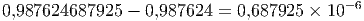 dado
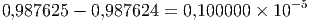. Em termos matemáticos, a resolução de um problema é realizada pelo
mapeamento 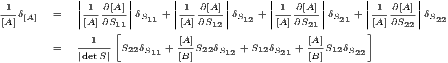, ou simplesmente 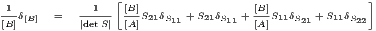.
os dados de saída, resolver o problema significa encontrar 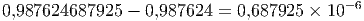 dado
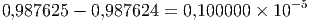. Em termos matemáticos, a resolução de um problema é realizada pelo
mapeamento 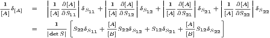, ou simplesmente 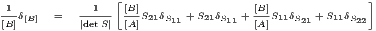.
Nesta seção, utilizaremos a seguinte descrição abstrata para o conceito de
“resolver um problema”: dado um conjunto de dados de entrada, encontrar os
dados de saída. Se denotamos pela variável os dados de entrada e pela
variável os dados de saída, resolver o problema significa encontrar 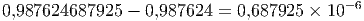 dado
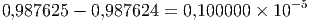. Em termos matemáticos, a resolução de um problema é realizada pelo
mapeamento 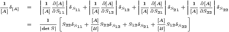, ou simplesmente 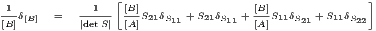.
É certo que na maioria das aplicações, os dados de entrada do problema, isto é 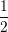, não é conhecido com total exatidão, devido a diversas fontes de erros como incertezas na coleta dos dados e erros de arredondamento. O conceito de condicionamento está relacionado com a forma como os erros nos dados de entrada influenciam os dados de saída.
Para fins de análise, denotaremos por 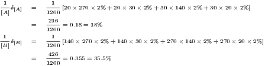, os dados de entrada com precisão
absoluta e por 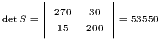, os dados com erro. Definiremos também a solução 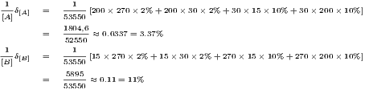, do
problema com dados de entrada  , ou seja, 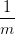.
, ou seja, 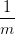.
Estamos interessados em saber se os erros cometidos na entrada 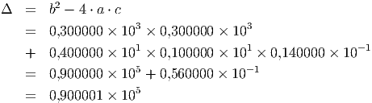 influenciaram na saída do problema 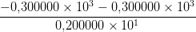. No caso mais simples, temos que 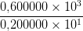 e 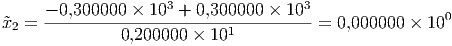. Assumindo que 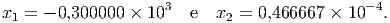 seja diferenciável, a partir da série de Taylor
|
|
obtemos (subtraindo 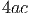 dos dois lados)
|
|
Para relacionarmos os erros relativos, dividimos o lado esquerdo por 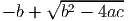, o lado direito por 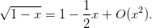 e obtemos
|
|
sugerindo a definição de número de condicionamento de um problema.
Definição 2.6.1. Seja 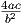 uma função diferenciável. O número de condicionamento de um problema é definido como
|
|
e fornece uma estimativa de quanto os erros relativos na entrada 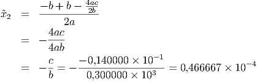 serão
amplificados na saída  .
.
De modo geral, quando  depende de várias variáveis, podemos obter
depende de várias variáveis, podemos obter
Uma matriz de números de condicionamento também poderia ser obtida como em [5].
Exemplo 2.6.1. Considere o problema de calcular 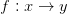 em 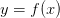. Se usarmos 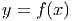, quanto será o erro relativo na saída? O erro relativo na entrada é
|
|
O número de condicionamento do problema calcular a raiz é
|
|
Ou seja, os erros na entrada serão diminuídos pela metade. De fato, usando 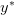 e 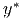, obtemos
|
|
Exemplo 2.6.2. Considere a função 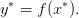 e 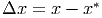 com um erro absoluto na entrada de 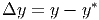.
Calculando 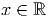 temos
|
|
Mas qual é a estimativa de erro nessa resposta? Quantos dígitos significativos temos nessa resposta?
Sabendo que 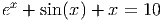, o número de condicionamento é
|
|
o que nos fornece para 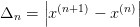,
|
|
Como o erro relativo na entrada é
|
|
temos que o erro na saída será aproximadamente
|
|
ou seja um erro relativo de aproximadamente 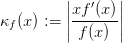.
Note que se usarmos 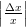 e 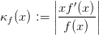 (ambos no intervalo do erro absoluto da entrada) encontramos
Solução. Temos que com erro absoluto de . Neste caso, calculamos , i.e. o erro absoluto em se calcular , por:
|
|
Como , temos:
Exemplo 2.6.4. Calcule o erro relativo ao medir sabendo
que é conhecido com de erro e é conhecido com  de erro.
de erro.
Solução. Calculamos as derivadas parciais de :

 temos
temos
Exemplo 2.6.5. No exemplo anterior, reduza o erro relativo em  pela
metade e calcule o erro relativo em . Depois, repita o processo reduzindo
o erro relativo em pela metade.
pela
metade e calcule o erro relativo em . Depois, repita o processo reduzindo
o erro relativo em pela metade.
Solução. Na primeira situação temos com erro relativo de e . Calculamos e o erro relativo em de . Na segunda situação, temos com erro de e . Calculamos e o erro relativo em de . Observe que mesma o erro relativo em sendo maior, o erro em é mais significante na função.
Exemplo 2.6.6. Considere um triângulo retângulo onde a hipotenusa e um dos catetos são conhecidos a menos de um erro: hipotenusa metros e cateto metros. Calcule o erro absoluto ao calcular a área dessa triângulo.
Solução. Primeiro vamos encontrar a expressão para a área em função da hipotenusa e um cateto . A tamanho de segundo cateto é dado pelo teorema de Pitágoras, , ou seja, . Portanto a área é
E 2.6.1. Considere que a variável é conhecida com um erro relativo de e a variável com um erro relativo de . Calcule o erro relativo associado a quando:
|
|
Suponha que você precise conhecer o valor de com um erro de . Você propõe uma melhoria na medição da variável ou ? Explique.
Resposta. , deve-se melhorar a medida na variável , pois, por mais que o erro relativo seja maior para esta variável, a propagação de erros atraves desta variáveis é muito menos importante do que para a outra variável.
E 2.6.2. A corrente em ampères e a tensão em volts em uma lâmpada se relacionam conforme a seguinte expressão:
|
|
onde é um número entre e e é tensão nominal em volts. Sabendo
que  e
e  , calcule a corrente e o erro relativo
associado quando a tensão vale .
, calcule a corrente e o erro relativo
associado quando a tensão vale .
Obs:. Este problema pode ser resolvido de duas formas distintas: usando
a expressão aproximada para a propagação de erro e inspecionando os
valores máximos e mínimos que a expressão pode assumir. Pratique os dois
métodos.
Resposta. pela aproximação ou pela segundo método  .
.
 em volts em uma lâmpada
se relacionam conforme a seguinte expressão:
em volts em uma lâmpada
se relacionam conforme a seguinte expressão: